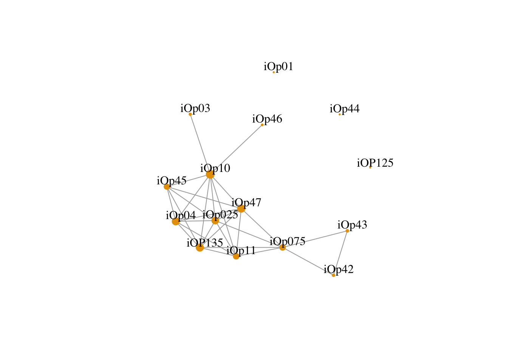

Chapter 8 Другие многомерные методы
АГК, ЭФА, КФА, структурное моделирование - не единственные многомерные методы для анализа данных. За бортом осталось множество подходов, таких как кластерный анализ и многомерное шкалирование. В заключение я хочу показать еще один интересный подход к анализу данных в социальных науках - сетевой анализ, т.е. анализ графов. Этот метод активно применяется в исследованиях социальных сетей, в биологии и даже в гуманитарных науках.
В основе графа лежит матрица близости между переменными. В данном случае мы можем использовать уже знакомую нам матрицу корреляций. Тогда отдельная вершина будет отдельным пунктом опросником, а связью между ними - наличие корреляции выше выбранного порога (использовать пороговое значение необязательно, но сделает визуализацию нагляднее).
install.packages("igraph")opinion_cor_abs <- abs(opinion_cor)
diag(opinion_cor_abs) <- 0
rownames(opinion_cor_abs) <- colnames(opinion_cor_abs) <- gsub("\\.", "", colnames(opinion_cor_abs))
library(igraph)##
## Attaching package: 'igraph'## The following objects are masked from 'package:stats':
##
## decompose, spectrum## The following object is masked from 'package:base':
##
## unionopinion_ig <- graph.adjacency(opinion_cor_abs, weighted = TRUE, mode = "lower")
opinion_ig <- delete.edges(opinion_ig, E(opinion_ig)[weight < 0.2])
plot(opinion_ig, vertex.colour = "grey", vertex.frame.color = NA,
vertex.size = strength(opinion_ig)*3+2, vertex.label.dist = 1,
edge.curved = 0, vertex.label.color = "black")
В R есть множество пакетов для интерактивных визуализаций графов.
install.packages("edgebundleR")library(edgebundleR)
edgebundle(opinion_ig)install.packages("networkD3")library(networkD3)
opinion_nd3 <- igraph_to_networkD3(opinion_ig)
forceNetwork(Links = opinion_nd3$links, Nodes = opinion_nd3$nodes,
Source = 'source', Target = 'target',
NodeID = 'name', Group = 1, opacity = 1)## Warning: It looks like Source/Target is not zero-indexed. This is required
## in JavaScript and so your plot may not render.